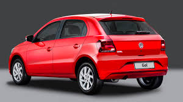
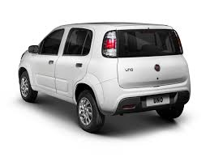
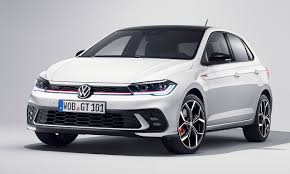

O Volkswagen Gol (especialmente modelos 2020-2022) é um hatchback compacto icônico no Brasil, conhecido pela robustez, economia e baixa desvalorização.

O Fiat Uno Vivace é um hatchback compacto popular no Brasil (até 2016), conhecido pelo baixo custo de manutenção, economia de combustível e agilidade urbana

O Volkswagen Polo é um hatch compacto moderno, conhecido pela plataforma estrutural segura (MQB), conforto e boa dirigibilidade, oferecendo motores 1.0 MPI ou TSI e câmbio automático/manual. Destaca-se pelo espaço interno (300L de porta-malas), painel digital, LED, agilidade urbana e alto valor de revenda.